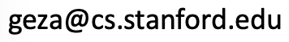

Geza Kovacs

I'm Geza Kovacs, a 2nd year PhD student studying Computer Science at Stanford.
My advisor is Michael Bernstein in the Human-Computer Interaction group.
I'm interested in microlearning, MOOCs, language learning, and educational technologies.
I did my undergrad and masters in CS at MIT, where I worked in the User Interface Design group at CSAIL.
Research
QuizCram: Question-Driven Video Viewing
QuizCram is a viewer for MOOC lectures that uses quizzes to direct navigation and reviewing.
Materials can be generated from existing in-video quizzes on Coursera.
CHI 2015 SRC (to appear)
Open-Source
UNetbootin: LiveUSB Creator
UNetbootin is a graphical tool to create bootable live USB drives.
It allows users to install Ubuntu and other Linux distributions on tablets and netbooks without CD drives.
I built and maintain UNetbootin. It has been downloaded over 40 million times.
Homepage Wikipedia

Wubi: Ubuntu Installer for Windows
Wubi is a tool that allows users to install Ubuntu from Windows.
It installs and boots Ubuntu from a file, so it does not require any repartitioning.
I built the original versions of Wubi, which is now part of Ubuntu.
Homepage Wikipedia
You can find my other open-source projects on Github and Launchpad.
See my resume for details on industry experience.
Publications
Geza Kovacs. QuizCram: A Question-Driven Video Studying Interface. CHI 2015 Student Reserach Competition (to appear).
Geza Kovacs, Robert C Miller. Smart Subtitles for Vocabulary Learning. CHI 2014 full paper. (ACM DL, video)
Joseph Jay Williams, Geza Kovacs, Caren Walker, Samuel G Maldonado, Tania Lombrozo. Learning Online via Prompts to Explain. CHI 2014 Works in Progress. (ACM DL)
Geza Kovacs, Robert C Miller. Foreign Manga Reader: Learn Grammar and Pronunciation while Reading Comics. UIST 2013 Demo. (ACM DL, video)
Geza Kovacs. Multimedia for Language Learning. MEng Thesis, MIT, 2013.
Geza Kovacs. Smart Subtitles for Language Learning. CHI 2013 Student Research Competition. (ACM DL, poster)
Geza Kovacs. ScreenMatch: Providing Context to Software Translators by Displaying Screenshots. CHI 2012 Student Research Competition (1st place). (ACM DL, poster)
Teaching
Natural Language Processing (TA, Fall 2012)
Introduction to C++ (Instructor, IAP 2011)
Introduction to C# and the .NET Framework (Instructor, IAP 2011)
Maslab Autonomous Robotics Competition (Software Director, IAP 2011)
Contact
If asking about UNetbootin, please ask a question on Launchpad, and consider making a donation:
For personal correspondence, I prefer email:

If you're into social networking, see LinkedIn, Facebook, and Google Plus.
FAQ / Misc
Q: How do I pronounce your name?
A: The "e" sound in Geza is the same as in "hey". The "cs" in Kovacs is pronounced "ch", not "ks".
Q: What are your pseudonyms / other names?
A: I go by tuxcantfly on the Ubuntu forums and some other open-source software-related sites. My Vietnamese name is Minh Trung, which is written in Chinese characters as 明忠. My Hungarian name is Kovács Géza (Hungarian puts the surname first).


 Donate via Paypal
Donate via Paypal Donate via Venmo
Donate via Venmo Donate via Bitcoin
Donate via Bitcoin